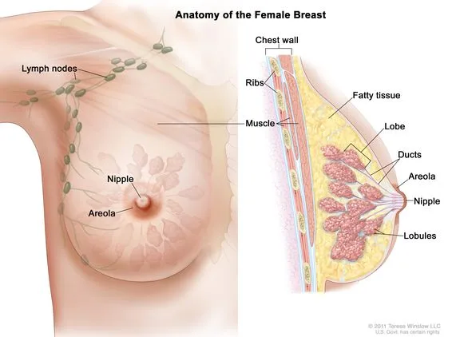

Expanded Nursing Uganda Explanation
Breast should be reviewed through safe maternal and newborn assessment, early recognition of danger signs, respectful communication and timely referral. Connect the definition to vital signs, bleeding, fetal or newborn wellbeing, patient education and local protocol requirements.
01 THE FEMALE BREAST (MAMMARY GLAND)
Breasts are two accessory glands of the female reproductive system .
Situation : They are situated on the anterior chest wall over the pectoralis major muscles between the 2nd and 6th rib and each extend from the sternum to the axilla forming the axillary tail. It’s stabilized by the suspensory ligament .
Shape :
- In a prime gravida, the shape is hemispherical and has a tail tissue extending towards the axilla forming the axillary tail .
- It is flat and pendulous or pawpaw shaped in the multiparous women.
- This varies with each individual and the stage of development as well as age.
Development : The nipples are present at birth but no further development takes place till puberty when the breast increases in size. Further development takes place during pregnancy, but it reaches its full maturity during lactation .
Gross Structure:
The breast has the following parts:
- Axillary Tail : This is a tail of tissue called the axillary tail of Spence , extending from the breast towards the axilla.
- Areola : It extends 2.5cm around the nipple and it contains sebaceous glands which become more visible in pregnancy and they are known as Montgomery tubercles . These lubricate the nipple.
- The Nipple : It lies in the centre of the areolar at the level of the fourth rib. It is a protuberance about 6mm in length, composed of erectile tissue and is covered with epithelium, contains plain muscle fibres which have a sphincter-like action controlling the flow of milk. The surface of the nipple is perforated by small orifices which open in the lactiferous ducts.
Microscopic Structure:
It is composed largely of glandular tissue but also of some fatty tissue and is covered with skin. The glandular tissue is covered with connective tissue. They are 18-20 in number.
The internal structure is said to be composed of the following:
- Nipple : This is located at the apex of the breast and projects up to 1 cm.
- Areola : This is a roughly circular area of skin that surrounds the nipple. Its colour darkens during pregnancy due to the deposition of melanin. The areolar skin contains Montgomery glands which secrete a protective oily lubricant.
- The Lobes : These separate the different batches of alveoli.
- The Alveoli : Each gland is called alveolus and is the milk-secreting unit lined by milk-making cells called acini cells. These are covered by myo-epithelium which contract to expel milk.
- The Lactiferous Tubule : Is also known as small ducts , they extend from the alveoli running into one another uniting to form bigger ducts which run into lactiferous ducts.
- The Lactiferous Duct : This is the central duct into which small ducts or tubules run.
- The Ampulla or Lactiferous Sinus : This is a widened out portion underneath the areola. It is a continuation of the lactiferous duct towards the nipple and terminates as minute openings on its surface. The ampulla is a milk reservoir during breastfeeding.
Blood Supply:
- By internal and external mammary arteries.
- Intercostal arteries which originate from the aorta.
Venous Return: From a circular network around the nipple and drain into internal mammary and axillary veins.
Lymphatic Drainage: Lymph drains freely between the breasts and into lymph nodes in the axilla and the medial sternum.
Nerve Supply: There is poor nervous supply. The skin is supplied by branches of the 4th, 5th and 6th thoracic nerves. The functions of the breasts are controlled by hormones i.e., oestrogen, progesterone, and prolactin. The breast is supported by the suspensory ligaments.
Functions of the Breast:
- To supply milk to the baby.
- To give shape to the female figure.
- It is a secondary sex organ.
02 Physiology of the Breast
1. Before Pregnancy
Breasts are present at birth. They develop at puberty due to the effect of oestrogen, which passes from the growing ovarian follicle through the bloodstream to the breast.
Effects of Oestrogen on the Breast:
- The breasts enlarge and assume the adult female size and shape.
- It causes further growth of the nipple and areola.
- It promotes growth and development of the lactiferous tubules and ducts. Therefore, breast enlargement is due to the enlargement of the ducts.
Before menstruation, breast fullness and tingling occur due to progesterone stimulation from the corpus luteum.
2. During Pregnancy
- Further breast development and enlargement occur due to alveoli hypertrophy. This is due to progesterone stimulation in preparation for milk production.
- Progesterone and oestrogen play an important part in the development of glandular tissue and its ducts.
3. After Delivery
- Prolactin is responsible for milk production, beginning around the third day postpartum. This occurs after oestrogen is fully withdrawn, and the breasts reach their full development.
Factors Affecting Lactation:
- Hormonal Control : Placental separation and expulsion alter the oestrogen-progesterone balance, resulting in prolactin release from the anterior pituitary gland.
- Physical Factors : The neuro-hormonal reflex, involving oxytocin, causes milk letdown when the baby suckles.
- Emotional Factors : Maternal willingness to breastfeed and the baby’s ability to breastfeed facilitate milk production.
- Nutritional Factors : Well-nourished lactating women experience more successful breastfeeding.
03 Physiology of Lactation
1. Hormonal Control :
- An alteration in the progesterone-oestrogen balance results in prolactin release from the lactotrophs of the anterior pituitary gland.
- Clinical Note : To suppress lactation (e.g., after baby loss), oestrogen may be administered via drugs like doxinex, cabergoline, etc., which inhibit prolactin.
2. Milk Production :
- Essential substances are extracted from the increased blood supply to the breast for milk formation. Fatty globules and protein molecules form at the base of acini cells , move into the alveoli, and travel through the lactiferous tubules. Lactation depends not only on hormones but also on breast blood supply.
3. Passage of Milk :
Milk transit from secretory cells to the nipple is aided by:
- Back Pressure : Newly formed globules push preceding ones into the lactiferous tubules and ducts.
- Neuro-Hormonal Reflex : Suckling empties the ampulla, causing large lactiferous ducts to contract and force milk towards the nipple. Nipple stimulation triggers oxytocin release from the posterior pituitary, further contracting lactiferous tubules and increasing milk flow.
- Maintenance of Milk Supply : Supply responds to demand. Frequent breastfeeding maintains supply; infrequent breastfeeding reduces it.
Factors Essential for Maintenance:
- Stimulus : Infant suckling creates the neuro-hormonal reflex. If the infant cannot breastfeed, the breast should be emptied by other means.
- Complete Emptying: Complete breast emptying ensures milk flow and stimulates new supply.
Important :
- Infants should breastfeed 5 times a day and 3 times at night (or more, 8 to 12 times in 24 hours).
- Correct positioning and attachment ensure effective suckling and adequate milk production and prevent sore/cracked nipples.
04 Positioning of the Mother During Breastfeeding:
The mother should sit upright , holding the breast with fingers in a “C” shape (thumb above the areola, fingers below). Avoid the “scissor hold,” which can remove the nipple from the infant’s mouth.
Assessment of Baby Positioning:
- Baby’s tummy faces the mother’s tummy.
- Head and body are aligned and supported.
- Nose faces the nipple, and the baby can look up at the mother’s face. The cradle position is common.
Assessment of Breast Attachment:
- Chin touches the breast.
- Mouth is wide open, and most of the areola is in the baby’s mouth.
- Cheeks are rounded.
- Lower lip is turned out.
- More areola is above than below the mouth.
Breastfeeding should be initiated within 30 minutes to 1 hour of life and maintained exclusively for six months. Babies should be breastfed on demand, which includes when the breast is full, the baby cries, or the mother desires. Effective breastfeeding involves the baby sucking and pausing to swallow.
Requirements : A chair, a draw sheet, and a hand towel or handkerchief.
Table
- Step Action Rationale
- 1. Apply soft skills while explaining procedure to the woman. To facilitate cooperation.
- 2. Instruct the mother to obtain a sitting up position and moves her hands from the lateral sides upwards and then places them down. To expose the breasts and observe any lamps if available.
- 3. Inspect the breasts for appearance, colour note symmetry, size, shape and texture, any dry scarring, ulceration or bleeding. To detect abnormalities.
- 4. Lift the two breasts upwards gently to inspect the sub mammary area. To observe skin infections and hygiene.
- 5. Palpate the Axilla and axillary tail of Spence of the left breast and then the right. To rule out tenderness which signifies signs of infections and for enlarged lymph nodes.
- 6. Systematically palpate the whole breast round. To feel for hard lamps.
- 7. Support the chest with the left hand and do the protraction test. To rule out abnormalities of the nipples.
- 8. Do the same to the second breast.
- 10. Make the mother comfortable, clear away and wash hands.
- What is a breast?
- Explain breast development.
- Describe the microscopic structure of the breast.
- State two functions of the breasts.
- Describe the physiology of lactation.
- State the factors that affect lactation.
05 Nursing Uganda Clinical Lens
Use Breast as a practical nursing topic, not only a memorized definition. Read the topic through the safety of two patients: the mother and the fetus or newborn.
- What to understand first: define breast, identify the normal or expected pattern, then explain what changes when the patient is unwell.
- Why it matters in care: the nurse must recognize risk early, explain findings clearly, document accurately and know when to escalate.
- How to revise it: connect each point to assessment, nursing diagnosis or care problem, intervention, rationale and evaluation.
06 Assessment Guide
- Maternal vital signs, bleeding, pain, contractions, uterine tone and danger signs.
- Fetal or newborn wellbeing, feeding, temperature, breathing and activity.
- History of pregnancy, parity, medications, allergies, investigations and referral risks.
07 Nursing Priorities, Rationales and Outcomes
- Recognize danger signs early and escalate without delay.
- Provide respectful communication, privacy, infection prevention and clear documentation.
- Teach the mother what to monitor at home and when to return urgently.
The rationale for these priorities is patient safety: nursing actions should prevent deterioration, reduce discomfort, support recovery and create clear evidence for the next caregiver.
- Expected outcome: Mother and baby remain stable, danger signs are acted on early, and the family understands follow-up instructions.
08 Patient Teaching and Revision Check
- Explain breast in simple language the patient or caregiver can repeat back.
- Teach warning signs, medicine or follow-up instructions, hygiene or lifestyle points where relevant.
- For exams, prepare a short answer using: definition, causes or risk factors, signs, assessment, management, complications and prevention.
- For ward practice, document baseline findings, actions taken, patient response and the plan for review.
Illustrations and Diagrams (1)

Related Video Lectures
Watch nursing lecture videos on YouTube for this topic. Opens in a new tab.
Watch on YouTubeExternal link: YouTube may use its own cookies and terms. Nursing Uganda is not affiliated with YouTube.